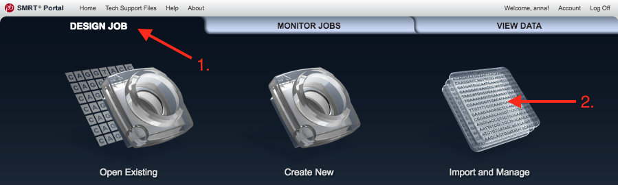
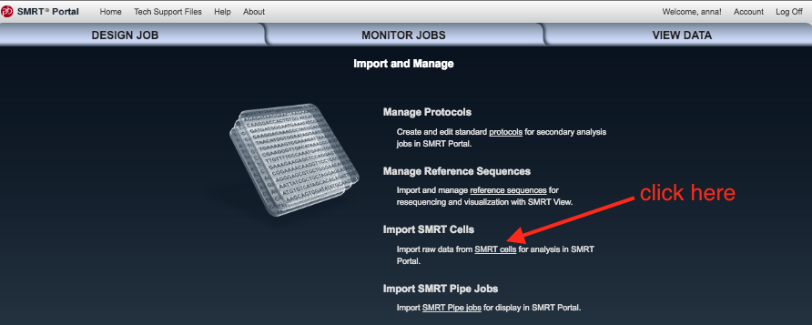
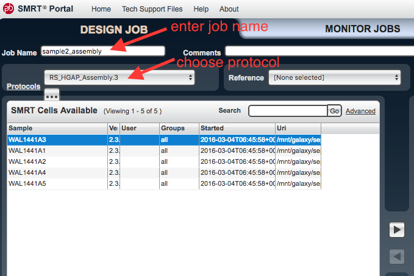
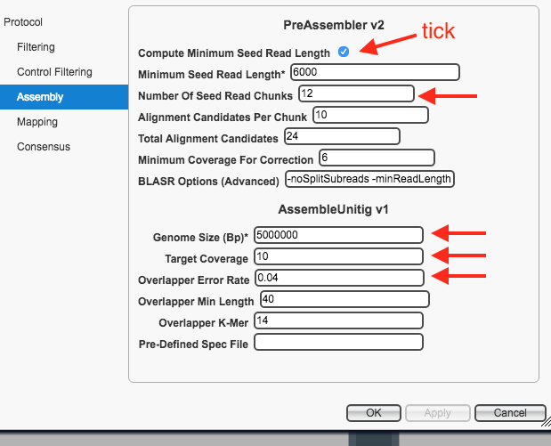
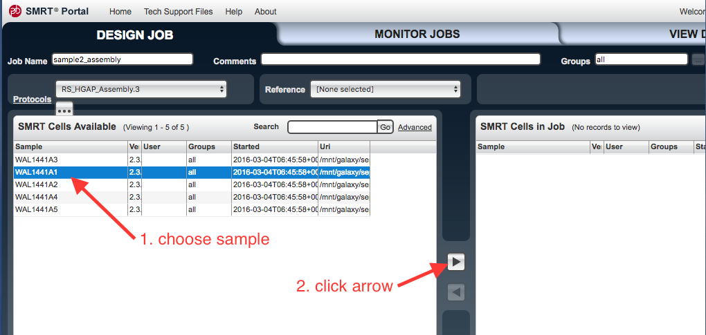
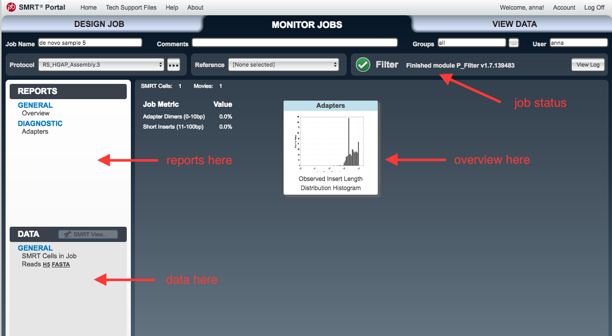

Assembly with PacBio data and SMRT Portal
This tutorial will show you how to assemble a bacterial genome de novo, using the PacBio SMRT Portal on the mGVL. We will use an analysis pipeline called HGAP, the Hierarchical Genome Assembly Process.
Start
- Open your mGVL dashboard.
- Go to Admin. There is a list of packages. Find SMRT Analysis. On the right, click
Install . - You should see SMRT Portal as one of the instance services on your GVL dashboard.
- Open up the SMRT portal web link (to the right) and register/log on.
Input
- Locate your PacBio data.
- Load the PacBio data onto your GVL.
- In the SMRT Portal, go to
Design Job , the top left tab. - Go to
Import and Manage .

- Click
Import SMRT cells .

- Work out where you put the data on your GVL, and make sure the file path is showing.
- If not, click
Add and enter the file path to the data.
- If not, click
- Click on the file path and then
Scan to check for new data.
Assembly
- Go back to the top left tab,
Design Job . - Go to
Create New . - An
Analysis window should appear. Check the box next toDe novo assembly , thenNext . - Under
Job Name enter a name. - Under
Protocols chooseRS_HGAP_Assembly.3 . - There is an ellipsis underneath
Protocols - click on the ellipsis.

This brings up the settings. Click on
- For
Compute Minimum Seed Read Length : ensure box is ticked - For
Number of Seed Read Chunks : enter 12 - Change the
Genome Size to an approximately correct size for the species. - For
Target Coverage : enter 10 - For
Overlapper Error Rate : enter 0.04 - Leave all other settings as they are.
- Click
Apply
Your protocol window should look like this:

-
Click
Ok . -
In the
SMRT Cells Available window, select the file to be used. Click on the arrow to transfer these files to the SMRT Cells in Job window.

- Click
Save (bottom right hand side). - Next to
Save , clickStart . - The
Monitor Jobs window should open.- As each step proceeds, new items will appear under the
Reports andData tabs on the left.
- As each step proceeds, new items will appear under the

Output
- Click on the top right tab,
View Data . Double click on the job name to open its reports. - Click on different reports in the left hand panel.
- Look at
Assembly: Polished Assembly . - If there is only one contig, then this is the assembled genome. We will do further polishing in the next step.
- If there are two or more contigs, one could be a plasmid, or the sample may require different assembly parameters, or new sequencing.
Polishing
During polishing, raw reads are used to correct the assembly.
- From the previous step, Go to Data: Assembly: Polished Assembly: and download the FASTA file by clicking on it.
- Unzip the .gz file
- Go to Design Job, Import and Manage, (bottom right hand side button:) New, then select that FASTA assembly file to upload.
- creates a new reference.
Design Job → Create New - choose reference-based
- Select protocol: RS_Resequencing.1
- Leave all settings.
- Select SMRT cell (same cell as used in the first analysis)
- Select your reference from the drop down menu.
- Save.
- Start.
- When complete, see Reports.
- Variants: how many found? if less than 2, does not need any more polishing.
- If 2+ variants found, repeat the polishing step (including adding a new reference).
Next
Correct with Illumina reads